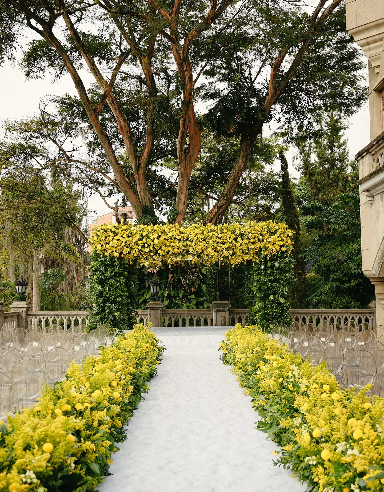
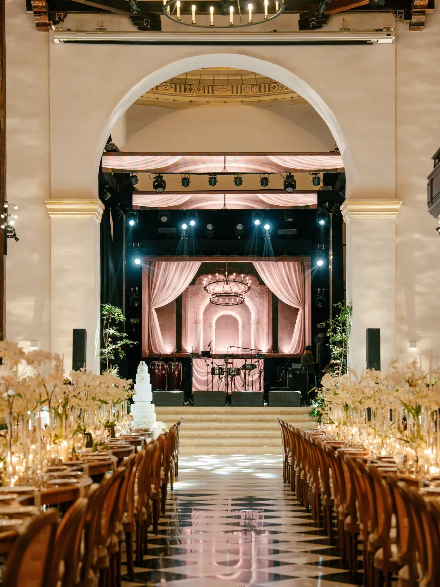
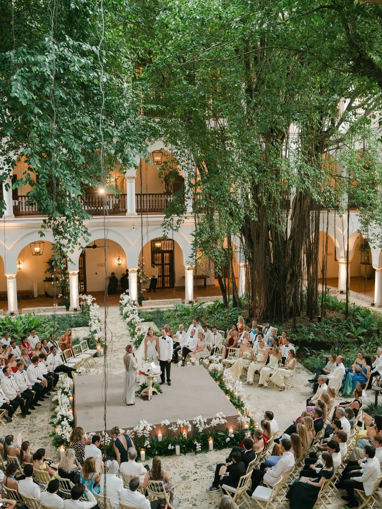
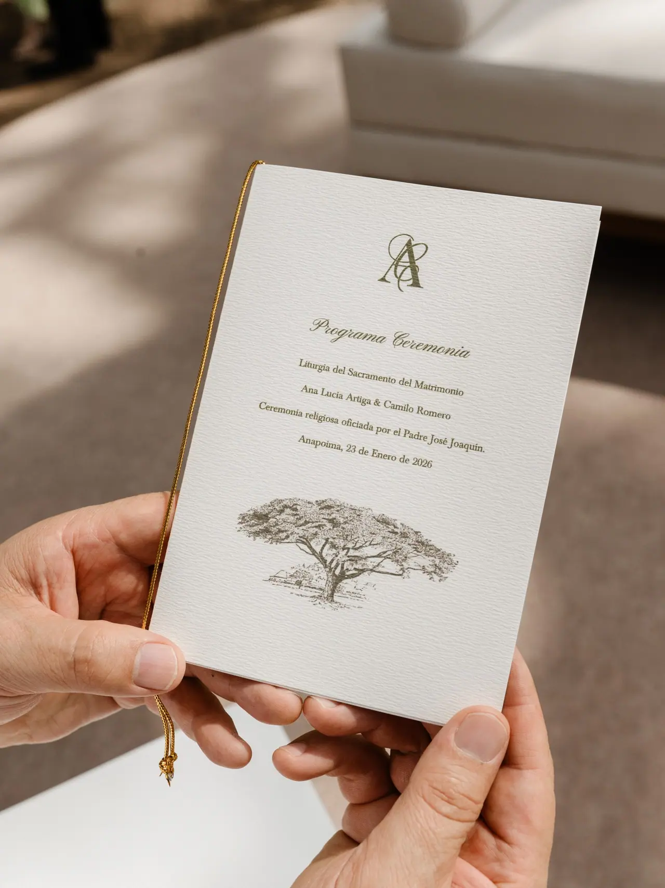
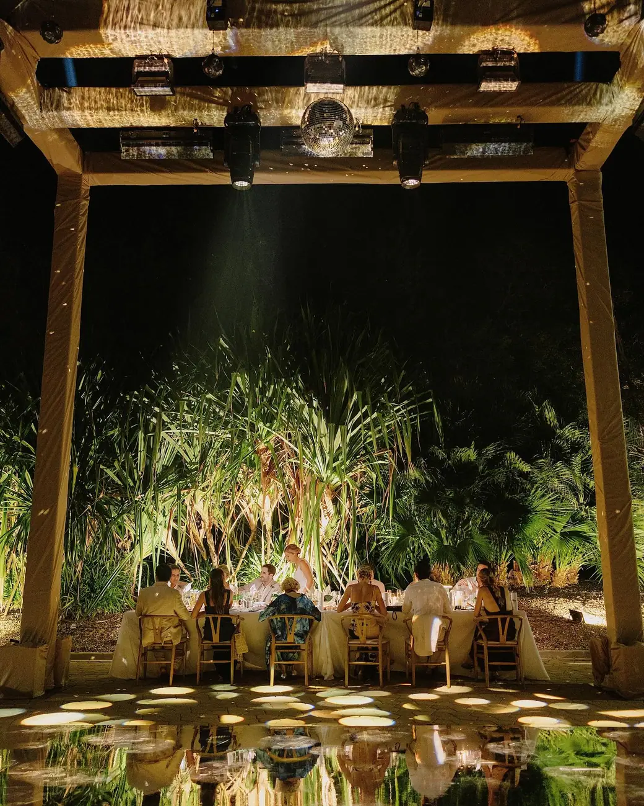
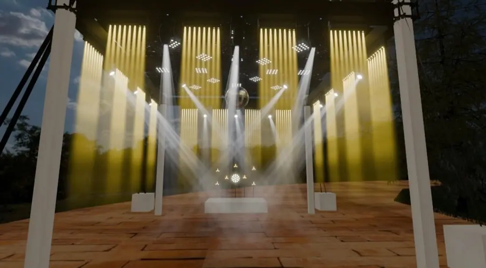
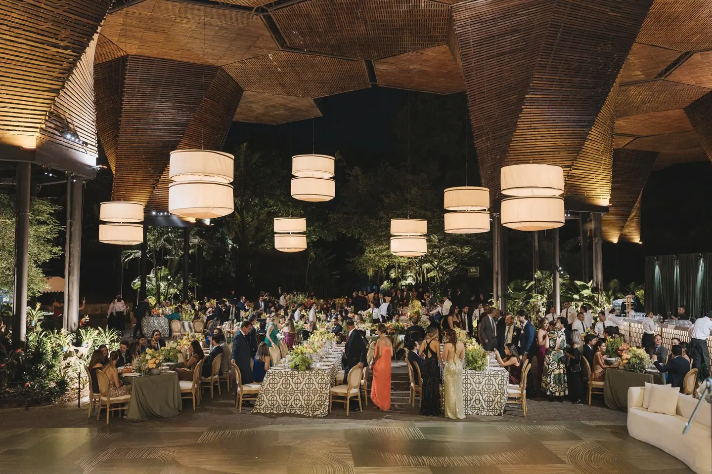
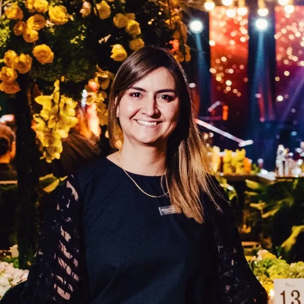
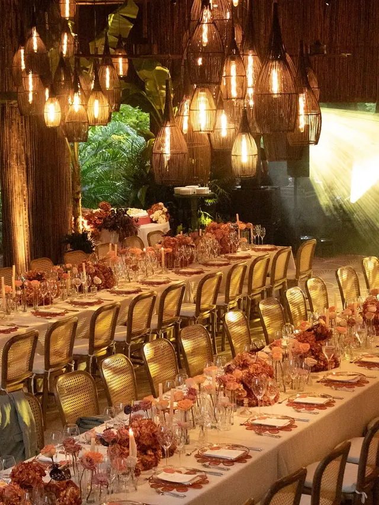

JohannaAbushihab
Wedding & event planner desde 2011. Bodas en Colombia y en el destino que sueñes.
Solicitar una citaCeremonia de Ashley y Travis, Medellín.
No hacemos más, lo hacemos mejor.
Un evento es un lienzo en blanco. Desde 2011 lo convertimos en bodas que se sienten propias: el lugar, el equipo y cada minuto del día.
Four Seasons Cartagena · la primera boda del hotel
Bogotá, Cartagena, Barú, Medellín, Mesa de Yeguas y destinos fuera de Colombia.
La historia se reescribe


Hace casi cinco siglos fue un monasterio y hace más de cien años la primera sede del Club Cartagena. Hoy es el Four Seasons, y su primera boda la planeó Johanna.
Ver la boda completaBodas recientes
Doce celebraciones de 2025 y 2026 en Cartagena, Barú, Medellín, Mesa de Yeguas y Bogotá, cada una con sus fotos y su equipo.
- Four Seasons CartagenaFour Seasons Hotel, Cartagena · 2026
- Ana Lu y CamiloMesa de Yeguas, Anapoima · 2026
- Ashley y TravisMedellín · 2026
- Camila y DavidJardín Botánico de Medellín · 2026
- Camila y SantiagoColombia · 2026
- Ana y AdrienLas Islas, Barú · 2025
- Steph y FedeJardín Botánico de Medellín · 2025
- Mafe y FelipeClub Mesa de Yeguas · 2025
- Vale y JuanBogotá · 2025
- Estefanía y JoséMedellín · 2025
- Fuerte San FernandoBocachica, Cartagena · 2025
- Sofitel BarúSofitel Barú Calablanca · 2025
Del primer café a la pista

La primera cita. Todo empieza con una conversación: qué sueñan, para cuántos y dónde. Con Estefanía fue un café en Madrid; después vinieron los viajes a Medellín para escoger cada detalle.


Diseño y equipo. Desde el día cero hay diseños y renders del espacio. Después se eligen los proveedores: «no siempre lo más costoso es lo mejor, ni lo más barato lo peor».

El día. Johanna lleva la dirección general: tiempos, proveedores, invitados y cada cambio de último minuto, de la ceremonia a la última canción. En el Sofitel Barú, la fiesta terminó a las 6:00 a. m.
Lo que planeamos

- Desde
- 2011
- Trabaja en
- Colombia y destinos
- Docente
- Universidad Externado
Johanna Abushihab
Fundó su marca en 2011 y fue elegida entre los diez mejores wedding planners de Colombia.
Suma más de veinte años en la industria del servicio, es directora para Colombia de la International Wedding and Event Industry Association (IWEA) y enseña en la Especialización en Organización Integral de Eventos de la Universidad Externado de Colombia.
Prensa y equipo
- Over The Moon2023
- Centro de Convenciones Cartagena2019
- Revista Fucsia2014
- IWEA, directora ColombiaHoy
- Tarimas del NortePisos
- Heritage of JACDecoración
- Andrés CortésDecoración
- Playa ProduccionesProducción
- CJ ProduccionesProducción
- Miguel PhotoFotografía
Lugares donde Johanna dirigió bodas y celebraciones en 2025 y 2026
Preguntas frecuentes
Lo que más le preguntan a Johanna antes de la primera cita.

No. Trabajamos en toda Colombia, de Bogotá a Cartagena, Barú, Medellín y Mesa de Yeguas, y en destinos fuera del país. Ha habido invitados que llegaron desde París y novios que planearon todo desde Madrid.
Ver la boda de Ana y AdrienEl camino completo: buscar el lugar, armar el equipo de proveedores, el presupuesto, el diseño con renders, la papelería, el cronograma y la dirección general del día.
Ver la boda de Vale y JuanPara eso está la dirección general: Johanna toma el mando de la producción y del día para que ustedes solo lo vivan.
Ver la boda de Ashley y TravisLo ideal es entre diez y doce meses antes, sobre todo para fechas de temporada en Cartagena y Barú. Si tienes menos tiempo, escríbenos igual.
Ver la boda de Mafe y FelipeSí. Hemos dirigido ceremonias judías con jupá, shabat y bodas de tres días, cuidando cada rito con la familia.
Ver la boda de Estefanía y JoséCon una cita. Escríbenos al 312 503 9700 con la fecha, el lugar y cuántos serán, y Johanna te propone el siguiente paso.
Solicitar una cita